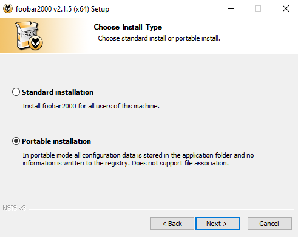
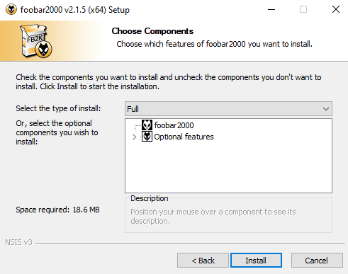
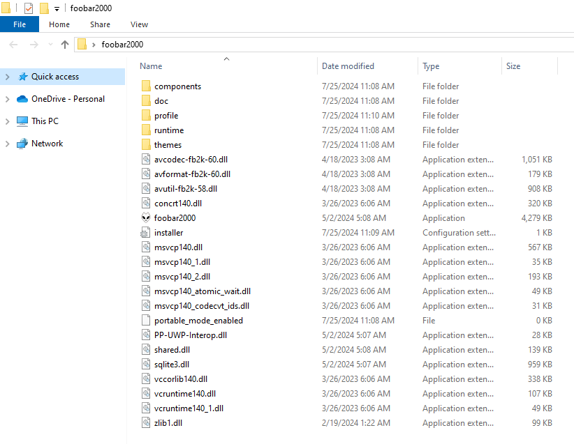
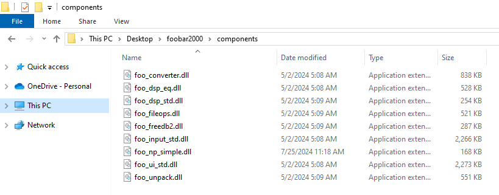

About
This project is to allow for users to be able to display the current song that is playing in Foobar2000.
The following information will be displayed and will be updated every second
- Song Title
- Album
- Artist
- Elapsed Time
- Remaing Time
- Album Art*
Set Up
Foobar2000
Head to Foobar2000's website here: https://www.foobar2000.org/download
Download the newist x32 version
Install the application as portable
Installation does not matter
Full installation for components are recomended, but none needed for this project
Once Installed run Foobar2000
OBS Setup
Select the newest release on GitHub
Download one of the following versions
- Node JS Server - Album art and common color extracter
- Foobar Previewer - HTML document to parse JSO
- Foobar Now Playing Simple Component - REQUIRED
- Full Project - Includes node JS server, Component, and HTML document
Download OBS (Any Version) if not already installed
Install with any settings as needed
Navigate to scene of choice
Create a new Browser Source
Check Local File
Browse for local file, and select "NP.html" in this folder
Set hight and width
- Height: >Y
- Width: >X
Keep all setings as default unless needed otherwise
Press OK
Components
Download the component in this project here.
WARNING: This is a raw .dll file, meaning windows will flag this, at the moment this component has been archived, when a new version is posted this will be updated.
Navigate to your Foobar2000 installation folder
Navigate to the components folder, and move the "foo_np_simple.dll" to this folder
Now Playing Simple
Open the Foobar2000 application
Go to File, then Preference (ctrl+p)
Go to Tools, Now Playing Simple
Check Save to File
Set the file path to the root of the project (same location as the HTML documents) with the file name of "foo_now_playing.json"
Set the following information
- Encoding: UTF-8 with Header
- Log mode: false
- Delay for (ms): false
- Copy to clipboard: false
Set the formated string to the following:
{
"nowplaying": {
"playing": $replace(%isplaying%,'?','0'),
"paused": $replace(%ispaused%,'?','0'),
"albumartist": "$replace(%album artist%,'"','\"','\','\\')",
"album": "$replace(%album%,'"','\"','\','\\')",
"artist": "$replace(%artist%,'"','\"','\','\\')",
"title": "$replace(%title%,'"','\"','\','\\')",
"tracknumber": $add($replace(%track number%,'?','0'),0),
"length": $replace(%length_seconds%,'?','0'),
"elapsed": $replace(%playback_time_seconds%,'?','0'),
"path": "$replace(%path%,'"','\"','\','\\')"
}
}
Set the on exit value to "not running"